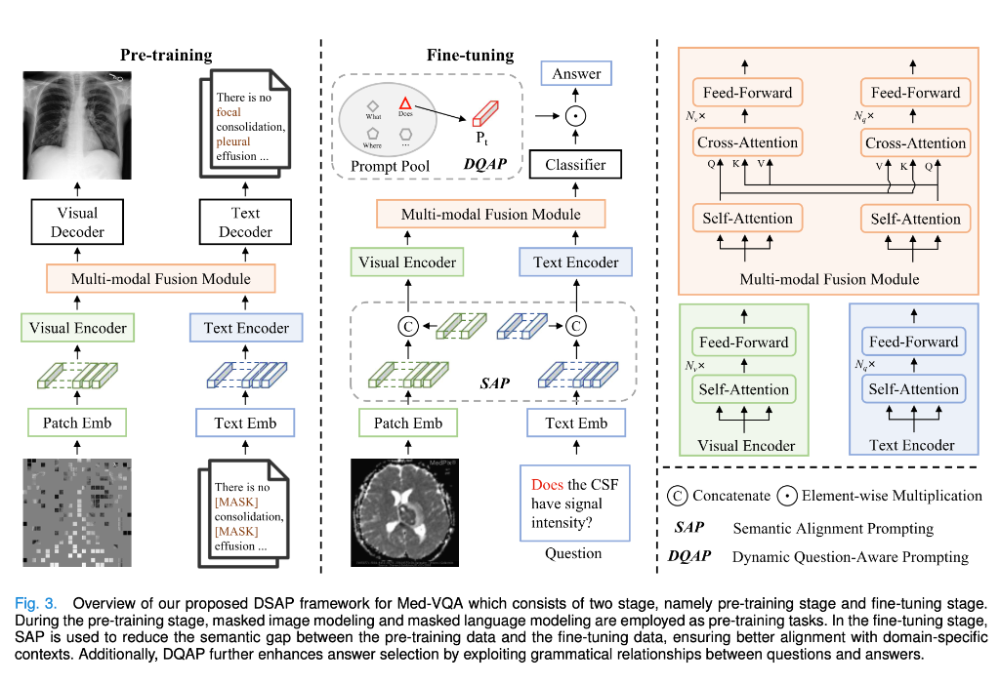

Labeling medical images requires highly specialized expertise from radiologists or pathologists. A single verified sample is extremely resource-intensive to produce.
General domain datasets (like VQAv2) contain over 265,000 images. Downstream medical datasets like VQA-RAD contain only 315 radiological images, creating a scale bottleneck.
Because of this data scarcity, models are highly prone to overfitting when fine-tuned directly on target QA pairs, failing to transfer upstream knowledge.
Instead of direct fine-tuning, DSAP bridges the semantic gap using prompt learning. It employs learnable semantic prompts to align the model outputs with domain-specific contexts and adjusts candidate weights based on question structures.
Injects trainable visual and textual prompts during fine-tuning to adapt representations.
Constrains the output selection using question grammatical prefixes.
Trained using Masked Language (MLM) and Masked Image (MIM) modeling tasks.

Masks 15% of the descriptive text tokens. The model predicts the missing medical terms by leveraging both the surrounding text context and the accompanying visual features.
Divides the scan into local patches and masks out 75% of them. The model is trained to reconstruct the original pixel values of the missing patches using the unmasked visual regions and textual clues.
Pre-training forces the encoders to build shared, cross-modal representation tables that bind pathology shapes to corresponding clinical words before fine-tuning starts.
81,000 pairs
Medical image-caption pairs sourced from PubMed Central. Modalities include MRI, CT, and Angiography.
210,000 pairs
Extracted from open-access journals, providing a large, diverse set of multimodal radiology observations.
377,110 images
Large database of labeled chest X-ray images paired with complete clinical radiology reports.
| Dataset | Image Types | QA Count | Key Characteristics |
|---|---|---|---|
| VQA-RAD | Radiological (Chest, Brain, Abdomen) | 3,515 pairs | Meticulously verified by medical professionals. Covers 11 question types. |
| SLAKE | MRI, CT, X-Ray (Organ focused) | 7,032 pairs | Bilingual (English/Chinese). Spans 12 diseases and 39 organ regions. |
| PathVQA | Histopathology Scans | 32,799 pairs | Derived from textbook captions. Larger scale but highly specialized. |
Classical architectures (SAN, MFB, BAN) applied directly to clinical settings without external knowledge transfer.
MAML, MEVF, and MMQ architectures that learn weight initializations to adapt to small data samples.
Contrastive pre-trained VLMs (PubMedCLIP) and reconstruction models (M3AE, M2I2) that pre-align modalities.
| Question Prefix | SAP Output (No DQAP) | SAP + DQAP Output |
|---|---|---|
| "Is there..." (Presence) | "No" (Incorrect) | "No" (Corrected constraint) |
| "Which side..." (Location) | "Pancreatic head" (Wrong context) | "Left" (Pruned location) |
| "Is this a A vs B..." | "Pleural effusion" (Partial) | "Pneumonia" (Corrected alternative) |
DSAP successfully addresses the medical pre-training vs. fine-tuning semantic gap. Through continuous prompt adapters (SAP) and grammatical logit constraints (DQAP), it achieves state-of-the-art diagnostic accuracy under strict medical data constraints.